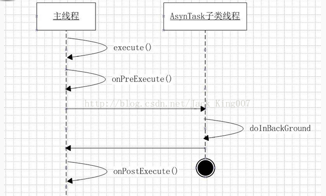

对于异步和handler的要求 。面试有很高的要求，对于这一节我也不是很清楚，不过我会边写边梳理我的思路，尽量在我讲的时候，顺便把这一节内容一起讲完。
今天是我写这一篇教程第十版，深圳的11月很凉爽,其实写着一篇教程我同时也在梳理我的思路，我是一个小菜鸟，只能写出基本的程序结构，不过现在打基础，后面还有很多精彩的开源项目，等着我们开发，我们要压抑着这份惊喜，好好的打基础。
谷歌公司为什么会出现异步，因为为了保证APP的流畅性，所以谷歌就在架构中加入，如果过多耗时操作在主线程执行就会报异常，或者直接down，然后给开发者提供了一套教程，当然这时候开发者就应该想你不让我在主线程耗时，那我就开启子线程更新呗，这时候问题来了..........................
子线程执行的耗时操作的结果不能在UI更新，这时候，开发者就要想了，那就把数据传给UI线程更新呗，当然这是消息机制了，这时候，谷歌肯定是有进步的，这不就有了把东西全部封装好，开发者直接调用方法就行了。
以上是我猜的............. 结果谷歌官方给出的解释呢 你猜是不是这样的
官方解释：
android提供了一套专门用于异步处理的类。即：AynsTask类。使用这个类可以为耗时程序开辟一个新线程进行处理，处理完时返回。
其实对于谷歌这个德行大家习惯就好，谷歌并不比我们聪明多少，但是关键java的三大特性 是啥 封装 继承 多态 这就给了谷歌时间，给一些基层的东西不断封装成一个工具类，继承和多态证明了扩展性，这个现在已经成了安卓系统了不是。
AsynTask类就是对Thread类的一个封装，并且加入了一些新的方法。编程时，两者都可以实现同样的功能。本文后面将对AsynTask和Thread进行比较。
AsynTask类结构
asysTask类主要用到的几个内部回调函数有：

怎么感觉再写下去专门写 异步的了，回到原题
onPreExecute()
1.主线程调用AsynTask子类实例的execute()方法后，首先会调用onPreExecute()方法。onPreExecute()在主线程中运行，可以用来写一些开始提示代码。
// 隐藏刷新按钮
mTitlebarRefresh.setVisibility(View.GONE);
// 显示进度条
mLoadnewsProgress.setVisibility(View.VISIBLE);
// 设置LoadMore Button 显示文本
loadMoreBtn.setText(R.string.loadmore_txt);
doInBackGround()
2.之后启动新线程，调用doInBackground()方法，进行异步数据处理。
在这里刷新界面~~~~
return getSpeCateNews((Integer) params[0], mNewsData,
(Integer) params[1], (Boolean) params[2]);
onPostExecute()
3.处理完毕之后异步线程结束，在主线程中调用onPostExecute()方法。onPostExecute()可以进行一些结束提示处理。
UI更新
// 根据返回值显示相关的Toast
switch (result) {
case NONEWS:
Toast.makeText(MainActivity.this, R.string.no_news,
Toast.LENGTH_LONG).show();
break;
case NOMORENEWS:
Toast.makeText(MainActivity.this, R.string.no_more_news,
Toast.LENGTH_LONG).show();
break;
case LOADERROR:
Toast.makeText(MainActivity.this, R.string.load_news_failure,
Toast.LENGTH_LONG).show();
break;
}
mNewsListAdapter.notifyDataSetChanged();
// 显示刷新按钮
mTitlebarRefresh.setVisibility(View.VISIBLE);
// 隐藏进度条
mLoadnewsProgress.setVisibility(View.GONE);
// 设置LoadMore Button 显示文本
loadMoreBtn.setText(R.string.loadmore_btn);
4.在doInBackground()方法异步处理的时候，如果希望通知主线程一些数据（如：处理进度）。这时，可以调用publishProgress()方法。这时，主线程会调用AsynTask子类的onProgressUpdate()方法进行处理
这个时候 我们就完成了一个 异步加载新闻了，主要是通过点击刷新按钮 来实现的.
再看异步这个类
private class LoadNewsAsyncTask extends AsyncTask<Object, Integer, Integer>
AsynTask类在继承时要传入3个泛型。
第一个泛型对应execute（）向doInBackground（）的传递类型。
第二个泛型对应doInBackground()的返回类型和传递给onPostExecute()的类型。
第三个泛型对应publishProgress()向progressUpdate（）传递的类型。
在这里之前我们跟handler 对比一下 ~~~~~~~~~~~~~~我是淫荡的分割线~~~~~~~~~~~~~~~~~~~~~~~~~
初次看到这个异步调用关系可能觉得很复杂，但其实熟悉了之后会发现这种结构很好用。这种结构将所有的线程通信都封装成回调函数，调用逻辑容易书写。尤其是在异步处理结束之后，有回调函数进行收尾处理。如果是使用Thread的run()方法，run()结束之后没有返回值。所以必须要自己建立通信机制。但是，其实使用Handler+Thread机制其实完全可以替代AsynTask的这种调用机制。只要将Handler对象传给Thread，就可以进行方便的异步处理。且这种MVC模式结构更加明显，方便管理。所以我觉得，使用asynTask还是Handler+Thread结构，个人喜好吧。但是有一点可以明显能感觉到得是，Handler+Thread适合进行大框架的异步处理，而asynTask适用于小型简单的异步处理。
好了开始写我们的代码吧
首先是对于我们的button 实例化，并且添加事件处理 我要的效果就是点刷新的时候，顺便将刷新的button 更换为 progressbar
<Button android:id="@id/titlebar_refresh" android:layout_width="wrap_content" android:layout_height="wrap_content" android:background="@drawable/titlebar_btn_refresh_selector" android:layout_marginTop="7.0dip" android:layout_marginRight="14.0dip" android:layout_alignParentRight="true" /> <ProgressBar android:id="@+id/loadnews_progress" android:layout_width="25.0dip" android:layout_height="25.0dip" android:clickable="false" android:visibility="gone" android:layout_marginRight="20.0dip" android:layout_marginTop="10.0dip" android:layout_alignParentRight="true" style="?android:attr/progressBarStyleLarge" />
大家可以看出 我刷新的button正常是显示的 progressbar是隐藏的 当你点击的时候，就会 progressbar显示 刷新的button隐藏
实例化button 和progressbar
mTitlebarRefresh = (Button) findViewById(R.id.titlebar_refresh); mLoadnewsProgress = (ProgressBar) findViewById(R.id.loadnews_progress); mTitlebarRefresh.setOnClickListener(loadMoreListener);
然后再是就是异步的开启 然后把所有更新UI的操作都放在异步。
private OnClickListener loadMoreListener = new OnClickListener() {
@Override
public void onClick(View v) {
loadNewsAsyncTask = new LoadNewsAsyncTask();
switch (v.getId()) {
case R.id.loadmore_btn:
// 获取该栏目下新闻
// getSpeCateNews(mCid,mNewsData,mNewsData.size(),false);
// 通知ListView进行更新
// mNewsListAdapter.notifyDataSetChanged();ww
loadNewsAsyncTask.execute(mCid, mNewsData.size(), false);
break;
case R.id.titlebar_refresh:
loadNewsAsyncTask.execute(mCid, 0, true);
break;
}
}
};然后再看 异步类
private class LoadNewsAsyncTask extends AsyncTask<Object, Integer, Integer> {
@Override
protected void onPreExecute() {
// 隐藏刷新按钮
mTitlebarRefresh.setVisibility(View.GONE);
// 显示进度条
mLoadnewsProgress.setVisibility(View.VISIBLE);
// 设置LoadMore Button 显示文本
loadMoreBtn.setText(R.string.loadmore_txt);
}
@Override
protected Integer doInBackground(Object... params) {
return getSpeCateNews((Integer) params[0], mNewsData,
(Integer) params[1], (Boolean) params[2]);
}
@Override
protected void onPostExecute(Integer result) {
// 根据返回值显示相关的Toast
switch (result) {
case NONEWS:
Toast.makeText(MainActivity.this, R.string.no_news,
Toast.LENGTH_LONG).show();
break;
case NOMORENEWS:
Toast.makeText(MainActivity.this, R.string.no_more_news,
Toast.LENGTH_LONG).show();
break;
case LOADERROR:
Toast.makeText(MainActivity.this, R.string.load_news_failure,
Toast.LENGTH_LONG).show();
break;
}
mNewsListAdapter.notifyDataSetChanged();
// 显示刷新按钮
mTitlebarRefresh.setVisibility(View.VISIBLE);
// 隐藏进度条
mLoadnewsProgress.setVisibility(View.GONE);
// 设置LoadMore Button 显示文本
loadMoreBtn.setText(R.string.loadmore_btn);
}
}
关于异步 基本就是我的那个思想基础就好